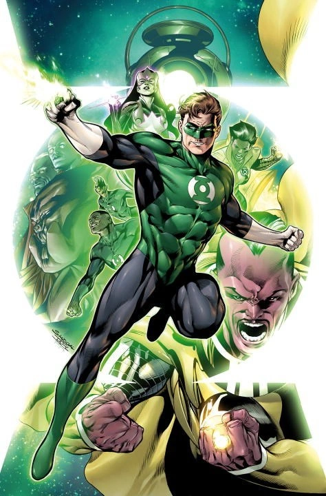
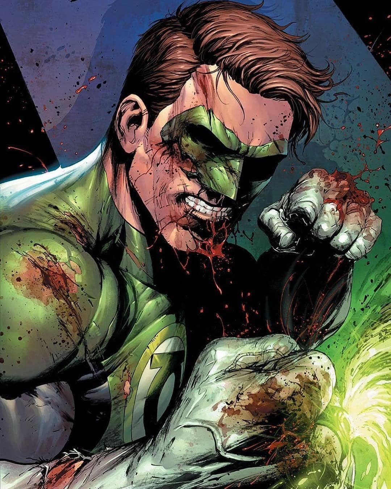

GREEN LANTERN
Test pilot Hal Jordan went from being a novelty, the first-ever human Green Lantern, to one of the most legendary Lanterns to ever wield a power ring.
Hal Jordan’s life was changed twice by crashing aircraft. The first time was when he witnessed the death of his father, pilot Martin Jordan. The second was when, as an adult and trained pilot himself, he was summoned to the crashed wreckage of a spaceship belonging to an alien named Abin Sur. Abin explained that he was a member of the Green Lantern Corps, an organization of beings from across the cosmos, armed with power rings fueled by the green energy of all willpower in the universe. Upon his death, Abin entrusted his ring and duties as the Green Lantern of Earth’s space sector to Hal Jordan.
Hal’s life as a Green Lantern has not been easy. He’s had to fight not only enemies, but often friends, colleagues and loved ones. But despite the strain his Green Lantern identity has put on his life, Hal is an honest man who can operate without fear, and is always willing to protect those in need—whether alone, with the Corps or alongside the Justice League and Earth’s other Super Heroes. For Hal has sworn the oath of every Green Lantern—that no evil will escape his sight.
CHARACTER FACTS
- Powers:
-
- hard light constructs
- instant weaponry
- force fields
- flight
- durability
- alien technology
- First Appearance:
- ALL-AMERICAN COMICS #16 (1940)
- Alias/Alter Ego:
- Hal Jordan
- Occupation:
- Test pilot